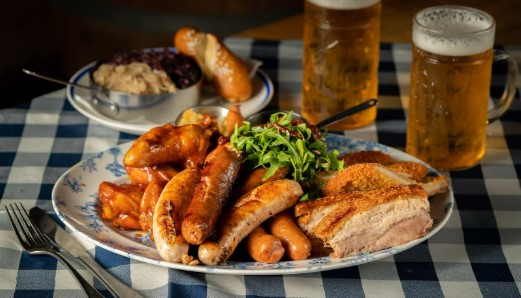
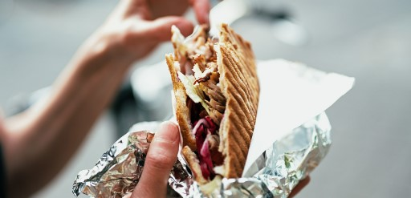
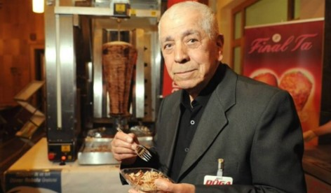

여러분은 독일 음식하면 어느 음식이 떠오르시나요?

유서 깊은 독일의 맥주? 맥주를 마실 때 빠질 수 없는 소시지?
디저트를 좋아하시는 분들이라면 바움쿠헨이나 하리보를 생각하실 수도 있고,
고기를 좋아하시는 분들은 슈바이스학세와 슈니첼과 같은 독일 고기 음식을 생각하실 것 같네요!
그렇다면 독일 사람들이 가장 즐겨 먹는 길거리 음식은 무엇일까요?
물론 위에 제가 적은 음식들도 많이 먹지만, 독일 사람들이 가장 많이 먹는 길거리 음식은 '되너(Döner)'라는 케밥의 한 종류입니다!
현재 독일 전역에서 18,000여 개의 매장이 매일 550톤에 육박하는 양의 되너를 판매한다고 하니 이 정도면 정말 독일의 국민 음식이 되지 않았나 싶을 정도의 인기입니다!
유명한 음식이 많은 독일에서 가장 인기 있는 길거리 음식이 튀르키예의 음식이라니 신기하게 생각하시는 분들도 많을 것 같은데요! 지금부터 케밥이 독일 길거리의 최강자가 된 과정을 알아보겠습니다!
이 이야기의 시작은 동·서독 분단이 있던 1960년대로 거슬러 올라갑니다. 분단 이후 서독은 눈에 띄는 경제 발전과 더불어 수많은 일자리 창출을 이뤄냈습니다. 이와 달리, 동독은 기업의 소유권이 국가로 넘어가는 등 서독과 반대되는 행보를 보이며 동독의 많은 인적 자원이 서독으로 유출되는 현상을 빚었습니다. 이러한 유출을 두고 볼 수 없었던 동독은 1961년 베를린 장벽을 건설하며 자국민의 유출을 막고자 하는 움직임을 보였습니다. 이러한 베를린 장벽의 건설은 서독 노동력 수입의 감소를 일으켰고, 그를 보완하기 위해 서독 정부는 외국인 노동자를 적극적으로 수용하는 'Gastarbeiter' 정책을 시행하게 됩니다. 한국의 광부와 간호사분들이 파견된 것으로 국내에 잘 알려진 이 정책에서 가장 큰 비중을 차지한 노동자는 바로 튀르키예 출신 노동자입니다.
1961년 10월 31일, 서독과 튀르키예 간 합의가 이뤄지며 1961년 이후 수많은 튀르키예인이 종교적인 이유와 일자리를 찾아 기회의 땅인 서독으로 오게 됩니다. 하지만 그로부터 12년 후인 1973년, 약 80만 명의 튀르키예 출신 노동자를 포함해 260만 명에 육박하는 외국인 노동자가 노동 시장을 점유하는 것을 걱정한 서독 정부는 Gastarbeiter 제도를 폐지함과 동시에, 그들의 귀국을 장려했습니다. 그러나 귀국을 장려한 서독의 의도와는 달리, 이전의 노동자 개인의 단독 이주에서 가족 단위의 단체 이주 현상을 빚어내며 서독은 여러 민족이 같이 살게 되는 현상을 피할 수 없게 되었고, 튀르키예인을 포함한 다양한 민족이 같이 살아가게 됩니다.
이러한 상황 속에서 음식을 팔며 생계를 유지하던 튀르키예 이주자 출신 Kadir Nurman 씨는 기발한 생각을 하게 됩니다. 1972년, 베를린 동물원 역 근처에서 음식을 팔던 Nurman 씨는 많은 사람들이 음식에 많은 시간을 투자할 겨를도 없이 빨리 먹고 다시 일하러 가야 한다는 사실을 알게 됐습니다. 이후 Nurman 씨는 평평한 빵에 케밥 식 고기와 양파 슬라이스를 넣어 되너라는 케밥을 만들었고, 튀르키예에서 판매하는 케밥과 상당히 유사한 모습을 가진 되너는 튀르키예인들을 넘어 독일인들에게도 입소문을 타, 현재에 이르러 독일에서 한 끼 식사를 책임질 수 있는 길거리 음식으로 발전하게 됐습니다.
독일의 되너는 튀르키예의 되너와 차별화되는 특징도 갖고 있습니다. 튀르키예식 되너에는 양고기 혹은 쇠고기와 같은 육류가 주를 이루지만, 독일식 되너는 닭고기를 사용하는 곳도 있을 뿐 아니라, 비건들을 위한 되너까지 있으며 이러한 변화를 이유로 되너를 독일의 음식으로 보는 사람들도 쉽게 찾아볼 수 있습니다.
지금까지 독일식 되너의 시작과 발전 과정에 대해 알아봤습니다!
현재까지도 튀르키예인은 독일에서 비중이 큰 외국인 집단으로서, 되너를 포함해 다양한 튀르키예의 문화가 독일에 널리 퍼져 있습니다. 독일에 갈 일이 있으시다면 길가의 되너 가게에 들러 한 번 먹어보는 건 어떨까요?
다음 주에는 다른 주제로 찾아뵙겠습니다! 읽어주셔서 감사합니다!